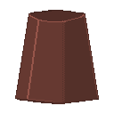
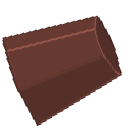

Du hast alle Würfel abgelegt! Warte bis die Runde beendet ist
Es wurde noch kein Spiel gestartet oder die aktuelle Runde wurde beendet -
Neue Runde Starten um weiterzuspielen!
{{ table.name }} - Runde: {{ table.round }}Spiel noch nicht gestartet
Spieler:
{{ player.name }},
Was wird gesucht?
{{ player.name }}Wir warten!!! ist fertig!!

